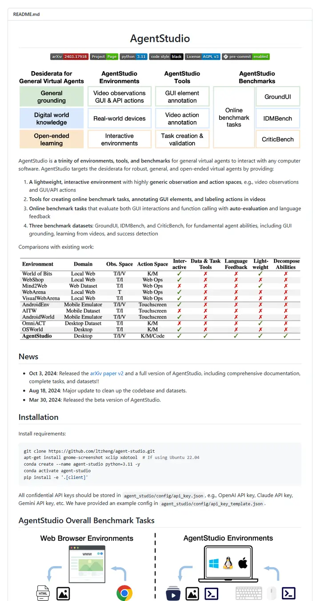

ltzheng/agent-studio
物語より先に仕様書。中央揃えの名前が一つ、ツール系タグが六つ並ぶ帯、エージェントに必要なものとツールキットが提供するものを対応づけたパステルの図、そして他の環境の足りなさを示すチェックとバツの表。

表示されたページと照合済みです。
選んだ理由
色分けされた要件とコンポーネントの対応図がヘッダーの要約を担い、既存環境との機能比較表が、他の選定ページにはない位置づけのスタイルを加えています。
以下の説明と DESIGN.md 本文は英語です。コーディングエージェントが同じ一つの版を読めるよう、翻訳していません。
概要
ヘッダー部分
バッジの色
セクション構成
ガイドライン
似たスタイル

adobe-research/obj-and-mat-selection
目次まで備えた会議録のページ。中央の一行に太字の名前、小さな ACM SIGGRAPH の紋章、細いタグが六つ。そしてスイカや台所の写真のグリッドでは、モデルが選んだ部分がティール色に染まっている。

Chuan-10/AGILE
明るい光の下の実験台。五文字の名前、太い大文字タグの帯。そしてハサミやマグカップ、コントローラーを握る手を並べたコンタクトシート。

coral-lab-asu/CRAFT
学会のリボンを掛けたツールマニュアル。中央に一行のタイトル、絵文字付きバッジの長い帯、点線で区切ったリンクバー。そして最初のインストール行より前に、三行の表が手法全体を説明してしまう。

damon-demon/SpanUQ
学会のスタンプが押されたコマンドラインツールのマニュアル。角括弧つきの見出し、小さな色付きタブが四つ、点線のジャンプバー、そして最初の段落が終わる前に数字が出てくる。

deepmancer/HairPort
プレスキットのように組まれた論文。大文字の派手なタグが一列に並び、日付入りの告知、学術誌のページのようにキャプションを持つ番号付きの図。そのすべてを太いグレーの罫線が区切る。

donaldssh/K-Merge
白い壁に貼られた学会のタイトルスライド。中央に一つの見出し、控えめなクレジットのブロック、グレーとカラーのタグの短い帯。そして文章が一語も出てくる前に、パステルのブロック図が物語を語る。